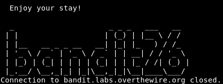
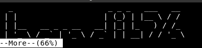

Bandit
My WU of the Bandit wargame from overthewire. The Bandit wargame is aimed at absolute beginners. It will teach the basics needed to be able to play other wargames.
Level 0
The goal of this level is for you to log into the game using SSH. The host to which you need to connect is bandit.labs.overthewire.org, on port 2220. The username is bandit0 and the password is bandit0. Once logged in, go to the Level 1 page to find out how to beat Level 1.
ssh bandit0@bandit.labs.overthewire.org -p 2220
Solution
cat readme
boJ9jbbUNNfktd78OOpsqOltutMc3MY1
Level 1
The password for the next level is stored in a file called - located in the home directory
ssh bandit1@bandit.labs.overthewire.org -p 2220
Solution
Using - as a filename to mean stdin/stdout is a convention that a lot of programs use. It is not a special property of the filename. The kernel does not recognise - as special so any system calls referring to - as a filename will use - literally as the filename.
With bash redirection, - is not recognised as a special filename, so bash will use that as the literal filename.
When cat sees the string - as a filename, it treats it as a synonym for stdin. To get around this, you need to alter the string that cat sees in such a way that it still refers to a file called -. The usual way of doing this is to prefix the filename with a path ./-, or /home/username/-. This technique is also used to get around similar issues where command line options clash with filenames, so a file referred to as ./-e does not appear as the -e command line option to a program, for example.
cat /home/bandit1/-
CV1DtqXWVFXTvM2F0k09SHz0YwRINYA9
Level 2
The password for the next level is stored in a file called spaces in this filename in this filename located in the home directory
ssh bandit2@bandit.labs.overthewire.org -p 2220
Solution
cat spaces\ in\ this\ filename
UmHadQclWmgdLOKQ3YNgjWxGoRMb5luK
Level 3
The password for the next level is stored in a hidden file in the inhere directory.
ssh bandit3@bandit.labs.overthewire.org -p 2220
Solution
cat inhere/.hidden
pIwrPrtPN36QITSp3EQaw936yaFoFgAB
Level 4
The password for the next level is stored in the only human-readable file in the inhere directory. Tip: if your terminal is messed up, try the reset command.
ssh bandit4@bandit.labs.overthewire.org -p 2220
Solution
file inhere/*
inhere/-file00: data
inhere/-file01: data
inhere/-file02: data
inhere/-file03: data
inhere/-file04: data
inhere/-file05: data
inhere/-file06: data
inhere/-file07: ASCII text
inhere/-file08: data
inhere/-file09: data
cat inhere/-file07
koReBOKuIDDepwhWk7jZC0RTdopnAYKh
Level 5
The password for the next level is stored in a file somewhere under the inhere directory and has all of the following properties:
- human-readable
- 1033 bytes in size
- not executable
ssh bandit5@bandit.labs.overthewire.org -p 2220
Solution
find . -readable -size 1033c ! -executable
./inhere/maybehere07/.file2
cat ./inhere/maybehere07/.file2
DXjZPULLxYr17uwoI01bNLQbtFemEgo7
Level 6
The password for the next level is stored somewhere on the server and has all of the following properties:
- owned by user bandit7
- owned by group bandit6
- 33 bytes in size
ssh bandit6@bandit.labs.overthewire.org -p 2220
Solution
find / -user bandit7 -group bandit6 -size 33c
# Lots of files for which you don't have read rights (except one)
cat /var/lib/dpkg/info/bandit7.password
HKBPTKQnIay4Fw76bEy8PVxKEDQRKTzs
Level 7
The password for the next level is stored in the file data.txt next to the word millionth
ssh bandit7@bandit.labs.overthewire.org -p 2220
Solution
cat data.txt | grep millionth
cvX2JJa4CFALtqS87jk27qwqGhBM9plV
Level 8
The password for the next level is stored in the file data.txt and is the only line of text that occurs only once
ssh bandit8@bandit.labs.overthewire.org -p 2220
Solution
sort data.txt | uniq --unique
UsvVyFSfZZWbi6wgC7dAFyFuR6jQQUhR
Level 9
The password for the next level is stored in the file data.txt in one of the few human-readable strings, beginning with several = characters.
ssh bandit9@bandit.labs.overthewire.org -p 2220
Solution
strings data.txt | grep =
truKLdjsbJ5g7yyJ2X2R0o3a5HQJFuLk
Level 10
The password for the next level is stored in the file data.txt, which contains base64 encoded data
ssh bandit10@bandit.labs.overthewire.org -p 2220
Solution
cat data.txt | base64 -d
IFukwKGsFW8MOq3IRFqrxE1hxTNEbUPR
Level 11
The password for the next level is stored in the file data.txt, where all lowercase (a-z) and uppercase (A-Z) letters have been rotated by 13 positions
ssh bandit11@bandit.labs.overthewire.org -p 2220
Solution
cat data.txt | tr 'A-Za-z' 'N-ZA-Mn-za-m'
5Te8Y4drgCRfCx8ugdwuEX8KFC6k2EUu
Level 12
The password for the next level is stored in the file data.txt, which is a hexdump of a file that has been repeatedly compressed. For this level it may be useful to create a directory under /tmp in which you can work using mkdir. For example: mkdir /tmp/myname123. Then copy the datafile using cp, and rename it using mv (read the manpages!)
ssh bandit12@bandit.labs.overthewire.org -p 2220
Solution
cd $(mktemp -d)
cp ~/data.txt .
# the base file is a hexdump. We can reverse the process.
xxd -r data.txt > bandit
# Then just check with the `file` command which file you currently have and use the commands accordingly.
# files compressed in `gzip` format can be extracted with `gunzip`. But you need the `gz` extension (so you should think about renaming `mv`).
gunzip [filename]
# compressed files in `bzip2` format can be decompressed with the following command:
bzip2 -d [filename] # -d => decompress
# tar archives
tar xvf [filename]
8ZjyCRiBWFYkneahHwxCv3wb2a1ORpYL
Level 13
The password for the next level is stored in /etc/bandit_pass/bandit14 and can only be read by user bandit14. For this level, you don’t get the next password, but you get a private SSH key that can be used to log into the next level. Note: localhost is a hostname that refers to the machine you are working on.
ssh bandit13@bandit.labs.overthewire.org -p 2220
Solution
we find the file sshkey.private so we can ssh into the localhost as user 'bandit14' and with the private key.
ssh -i sshkey.private bandit14@localhost
cat /etc/bandit_pass/bandit14
4wcYUJFw0k0XLShlDzztnTBHiqxU3b3e
Level 14
The password for the next level can be retrieved by submitting the password of the current level to port 30000 on localhost.
ssh bandit14@bandit.labs.overthewire.org -p 2220
Solution
echo "4wcYUJFw0k0XLShlDzztnTBHiqxU3b3e" | nc localhost 30000
BfMYroe26WYalil77FoDi9qh59eK5xNr
Level 15
The password for the next level can be retrieved by submitting the password of the current level to port 30001 on localhost using SSL encryption.
Helpful note: Getting HEARTBEATING and Read R BLOCK? Use -ign_eof and read the CONNECTED COMMANDS section in the manpage. Next to R and Q, the B command also works in this version of that command…
ssh bandit15@bandit.labs.overthewire.org -p 2220
Solution
echo "BfMYroe26WYalil77FoDi9qh59eK5xNr" | openssl s_client -ign_eof -connect localhost:30001
cluFn7wTiGryunymYOu4RcffSxQluehd
Level 16
The credentials for the next level can be retrieved by submitting the password of the current level to a port on localhost in the range 31000 to 32000. First find out which of these ports have a server listening on them. Then find out which of those speak SSL and which don’t. There is only 1 server that will give the next credentials, the others will simply send back to you whatever you send to it.
ssh bandit16@bandit.labs.overthewire.org -p 2220
Solution
We look for open ports.
nmap -p- localhost
# We logs in to find the password.
openssl s_client -ign_eof -connect localhost:31790
You need to reset the password for the current challenge and you get an ssh key. Which we save as bandit17.key.
Level 17
There are 2 files in the home directory: passwords.old and passwords.new. The password for the next level is in passwords.new and is the only line that has been changed between passwords.old and passwords.new
NOTE: if you have solved this level and see Byebye! when trying to log into bandit18, this is related to the next level, bandit19
ssh bandit17@bandit.labs.overthewire.org -p 2220 -i bandit17.key
Solution
diff passwords.old passwords.new
kfBf3eYk5BPBRzwjqutbbfE887SVc5Yd
Level 18
The password for the next level is stored in a file readme in the home directory. Unfortunately, someone has modified .bashrc to log you out when you log in with SSH.
ssh bandit18@bandit.labs.overthewire.org -p 2220 "cat readme"
Solution
The password is retrieved directly with the login command.
IueksS7Ubh8G3DCwVzrTd8rAVOwq3M5x
Level 19
To gain access to the next level, you should use the setuid binary in the home directory. Execute it without arguments to find out how to use it. The password for this level can be found in the usual place /etc/bandit_pass, after you have used the setuid binary.
ssh bandit19@bandit.labs.overthewire.org -p 2220
Solution
We have a file to run and we pass it a command to retrieve the password of bandit20.
./bandit20-do cat /etc/bandit_pass/bandit20
GbKksEFF4yrVs6il55v6gwY5aVje5f0j
Level 20
There is a setuid binary in the home directory that does the following: it makes a connection to localhost on the port you specify as a command line argument. It then reads a line of text from the connection and compares it to the password in the previous level (bandit20). If the password is correct, it will transmit the password for the next level (bandit21).
ssh bandit20@bandit.labs.overthewire.org -p 2220
Solution
You need to open a listening port in TCP.
echo "GbKksEFF4yrVs6il55v6gwY5aVje5f0j" | nc -l localhost -p 61254 &
./suconnect 61254
# Read: GbKksEFF4yrVs6il55v6gwY5aVje5f0j
# Password matches, sending next password
gE269g2h3mw3pwgrj0Ha9Uoqen1c9DGr
Level 21
A program is running automatically at regular intervals from cron, the time-based job scheduler. Look in /etc/cron.d/ for the configuration and see what command is being executed.
ssh bandit21@bandit.labs.overthewire.org -p 2220
Solution
ls /etc/cron.d
# atop cronjob_bandit22 cronjob_bandit23 cronjob_bandit24
cat cronjob_bandit22
# @reboot bandit22 /usr/bin/cronjob_bandit22.sh &> /dev/null
# * * * * * bandit22 /usr/bin/cronjob_bandit22.sh &> /dev/null
cat /usr/bin/cronjob_bandit22.sh
# #!/bin/bash
# chmod 644 /tmp/t7O6lds9S0RqQh9aMcz6ShpAoZKF7fgv
# cat /etc/bandit_pass/bandit22 > /tmp/t7O6lds9S0RqQh9aMcz6ShpAoZKF7fgv
cat /tmp/t7O6lds9S0RqQh9aMcz6ShpAoZKF7fgv
Yk7owGAcWjwMVRwrTesJEwB7WVOiILLI
Level 22
A program is running automatically at regular intervals from cron, the time-based job scheduler. Look in /etc/cron.d/ for the configuration and see what command is being executed.
NOTE: Looking at shell scripts written by other people is a very useful skill. The script for this level is intentionally made easy to read. If you are having problems understanding what it does, try executing it to see the debug information it prints.
ssh bandit22@bandit.labs.overthewire.org -p 2220
Solution
cat /etc/cron.d/cronjob_bandit23
# @reboot bandit23 /usr/bin/cronjob_bandit23.sh &> /dev/null
# * * * * * bandit23 /usr/bin/cronjob_bandit23.sh &> /dev/null
cat /usr/bin/cronjob_bandit23.sh
# #!/bin/bash
# myname=$(whoami)
# mytarget=$(echo I am user $myname | md5sum | cut -d ' ' -f 1)
# echo "Copying passwordfile /etc/bandit_pass/$myname to /tmp/$mytarget"
# cat /etc/bandit_pass/$myname > /tmp/$mytarget
$(echo I am user bandit23 | md5sum | cut -d ' ' -f 1)
# -bash: 8ca319486bfbbc3663ea0fbe81326349: command not found
cat /tmp/8ca319486bfbbc3663ea0fbe81326349
jc1udXuA1tiHqjIsL8yaapX5XIAI6i0n
Level 23
A program is running automatically at regular intervals from cron, the time-based job scheduler. Look in /etc/cron.d/ for the configuration and see what command is being executed.
NOTE: This level requires you to create your own first shell-script. This is a very big step and you should be proud of yourself when you beat this level!
NOTE 2: Keep in mind that your shell script is removed once executed, so you may want to keep a copy around…
ssh bandit23@bandit.labs.overthewire.org -p 2220
Solution
cd $(mktemp -d)
# /tmp/tmp.vqqZkF0eeo
touch test.sh
touch pass
chmod 777 test.sh
chmod 666 pass
vi test.sh
# #!/bin/bash
# cat /etc/bandit_pass_bandit24 > /tmp/tmp.vqqZkF0eeo/pass
# (Wait a minute)
cat password
UoMYTrfrBFHyQXmg6gzctqAwOmw1IohZ
Level 24
A daemon is listening on port 30002 and will give you the password for bandit25 if given the password for bandit24 and a secret numeric 4-digit pincode. There is no way to retrieve the pincode except by going through all of the 10000 combinations, called brute-forcing.
ssh bandit24@bandit.labs.overthewire.org -p 2220
Solution
cd $(mktemp -d)
import socket
s = socket.socket(socket.AF_INET, socket.SOCK_STREAM)
s.connect(("localhost", 30002))
s.recv(1024)
for i in range(1000):
print('UoMYTrfrBFHyQXmg6gzctqAwOmw1IohZ {0:04}'.format(i))
data = "UoMYTrfrBFHyQXmg6gzctqAwOmw1IohZ {0:04}".format(i)+"\n"
s.sendall(data.encode())
response = s.recv(1024).decode()
print(response)
if("Wrong" in response):
print('ok')
else:
print("Got it ", i)
break
s.close()
uNG9O58gUE7snukf3bvZ0rxhtnjzSGzG
Level 25
Logging in to bandit26 from bandit25 should be fairly easy... The shell for user bandit26 is not /bin/bash, but something else. Find out what it is, how it works and how to break out of it.
ssh bandit25@bandit.labs.overthewire.org -p 2220
Solution
We connect to bandit 25 and get the ssh key from bandit 26. We can connect to bandit 26. But first we look at the following file through bandit 25
cat /etc/passwd
# bandit26:x:11026:11026:bandit level 26:/home/bandit26:/usr/bin/showtext
We look into /usr/bin/showtext
#!/bin/sh
export TERM=linux
more ~/text.txt
exit 0
We are in the sh shell and the more command is executed from the start to see the ~/text.txt file.
We now connect to bandit 26.
ssh bandit26@bandit.labs.overthewire.org -p 2220 -i bandit26.sshkey
At the connection, we see:

We do the same thing again but reduce the size of our terminal so that the more command is effective.

To enter edit mode in more, you type v.
This uses vi. Enter the command
:e /etc/bandit_pass/bandit26
5czgV9L3Xx8JPOyRbXh6lQbmIOWvPT6Z
Level 26
Good job getting a shell! Now hurry and grab the password for bandit27!
ssh bandit26@bandit.labs.overthewire.org -p 2220
Solution
As before, we connect to bandit 26 with a small terminal. Switch to v edit mode. Enter the command.
:set shell=/bin/bash
:shell
# We finally get a shell in `vi` which allows us to run any command we want.
cat /etc/bandit_pass/bandit27
3ba3118a22e93127a4ed485be72ef5ea
Level 27
There is a git repository at ssh://bandit27-git@localhost/home/bandit27-git/repo. The password for the user bandit27-git is the same as for the user bandit27.
Clone the repository and find the password for the next level.
ssh bandit27@bandit.labs.overthewire.org -p 2220
Solution
cd $(mktemp -d)
git clone ssh://bandit27-git@localhost/home/bandit27-git/repo
cat README
0ef186ac70e04ea33b4c1853d2526fa2
Level 28
There is a git repository at ssh://bandit28-git@localhost/home/bandit28-git/repo. The password for the user bandit28-git is the same as for the user bandit28.
Clone the repository and find the password for the next level.
ssh bandit28@bandit.labs.overthewire.org -p 2220
Solution
cd $(mktemp -d)
git clone ssh://bandit28-git@localhost/home/bandit28-git/repo
git log
# commit 073c27c130e6ee407e12faad1dd3848a110c4f95
# Author: Morla Porla <morla@overthewire.org>
# Date: Tue Oct 16 14:00:39 2018 +0200
# fix info leak
# commit 186a1038cc54d1358d42d468cdc8e3cc28a93fcb
# Author: Morla Porla <morla@overthewire.org>
# Date: Tue Oct 16 14:00:39 2018 +0200
# add missing data
# commit b67405defc6ef44210c53345fc953e6a21338cc7
# Author: Ben Dover <noone@overthewire.org>
# Date: Tue Oct 16 14:00:39 2018 +0200
# initial commit of README.md
git checkout 186a1038cc54d1358d42d468cdc8e3cc28a93fcb
cat README
bbc96594b4e001778eee9975372716b2
Level 29
There is a git repository at ssh://bandit29-git@localhost/home/bandit29-git/repo. The password for the user bandit29-git is the same as for the user bandit29.
Clone the repository and find the password for the next level.
ssh bandit29@bandit.labs.overthewire.org -p 2220
Solution
We look into README.md
cat README.md
# # Bandit Notes
# Some notes for bandit30 of bandit.
# ## credentials
# - username: bandit30
# - password: <no passwords in production!>
# So we look at whether there are other branches
git branch -r
# origin/HEAD -> origin/master
# origin/dev
# origin/master
# origin/sploits-dev
# We change branch and find the password in the README.md
git checkout dev
5b90576bedb2cc04c86a9e924ce42faf
Level 30
There is a git repository at ssh://bandit30-git@localhost/home/bandit30-git/repo. The password for the user bandit30-git is the same as for the user bandit30.
Clone the repository and find the password for the next level.
ssh bandit30@bandit.labs.overthewire.org -p 2220
Solution
git tag
# secret
git show secret
47e603bb428404d265f59c42920d81e5
Level 31
There is a git repository at ssh://bandit31-git@localhost/home/bandit31-git/repo. The password for the user bandit31-git is the same as for the user bandit31.
Clone the repository and find the password for the next level.
ssh bandit31@bandit.labs.overthewire.org -p 2220
Solution
cd $(mktemp -d)
git clone ssh://bandit31-git@localhost/home/bandit31-git/repo
cat README.md
# This time your task is to push a file to the remote repository.
# Details:
# File name: key.txt
# Content: 'May I come in?'
# Branch: master
git add -f key.txt
git commit -m "bandit31"
git push
56a9bf19c63d650ce78e6ec0354ee45e
Level 32
After all this git stuff its time for another escape. Good luck!
ssh bandit32@bandit.labs.overthewire.org -p 2220
Solution
Once logged in, a shell in upper case opens
Remember that + $0 => the name of the called script (with full path) + $# => number of arguments + $@ => list of arguments.
$0
# The bash that ran the "Shift" script is recalled
cat /etc/bandit_pass/bandit33
c9c3199ddf4121b10cf581a98d51caee
Level 33
At this moment, level 34 does not exist yet.
ssh bandit33@bandit.labs.overthewire.org -p 2220
Solution
cat README.txt
# Congratulations on solving the last level of this game!
# At this moment, there are no more levels to play in this game. However, we are constantly working
# on new levels and will most likely expand this game with more levels soon.
# Keep an eye out for an announcement on our usual communication channels!
# In the meantime, you could play some of our other wargames.
# If you have an idea for an awesome new level, please let us know!
THE END